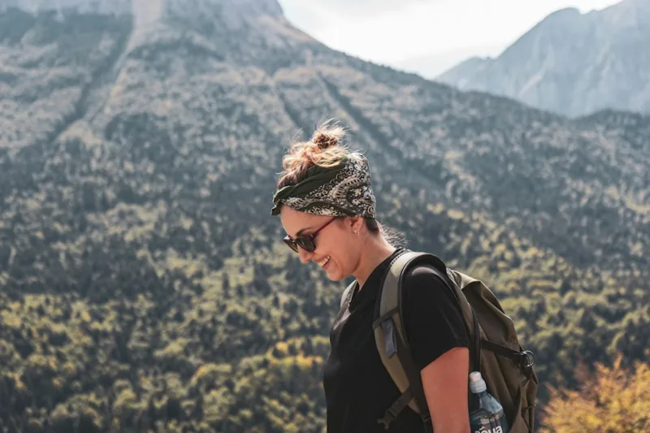
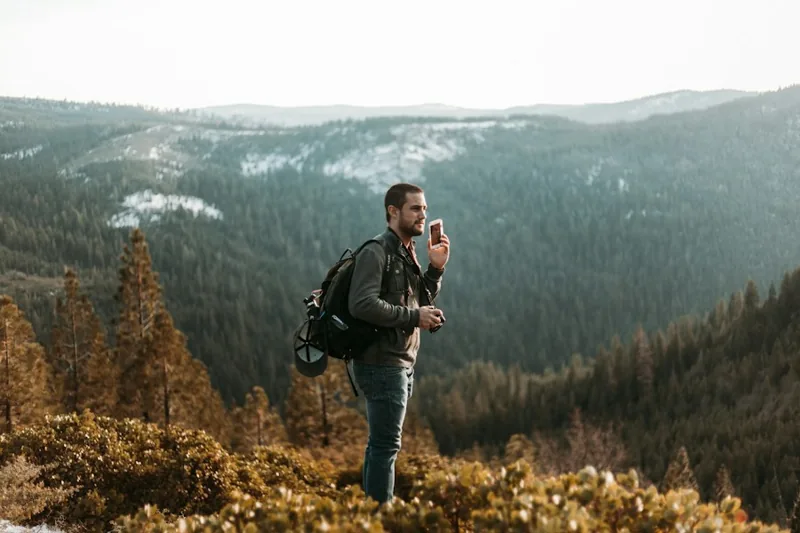
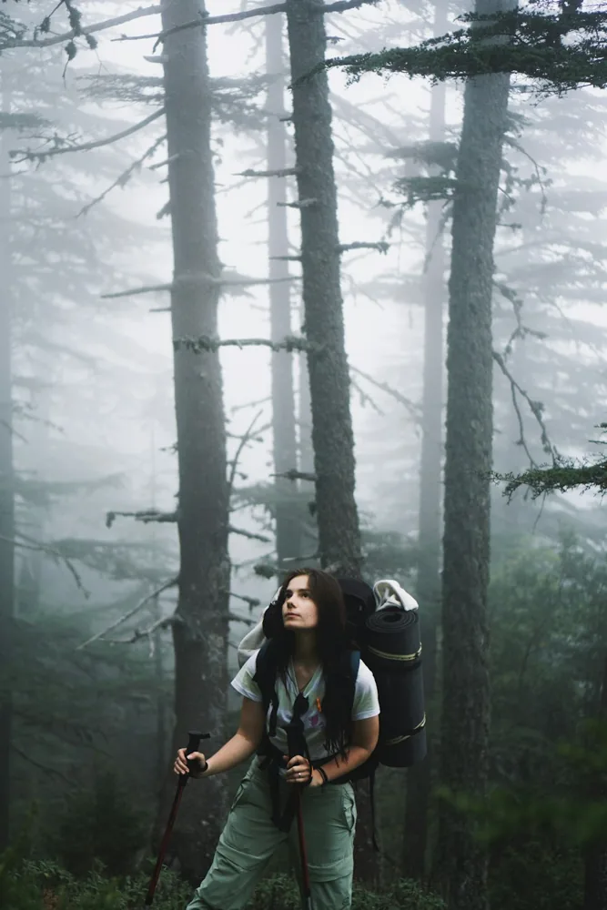

Тропа / Наша команда
Люди, с которыми по пути.
Знакомься с теми, кто идёт рядом.
Два инструктора на маршруте. Внимание — каждому.
Хорошая компания — половина путиКОМАНДА / ТРОПА
Инструктор 01ТРОПА

Фотоиллюстрация
Анна Лескова
Пешие походы
6 летопыта в походах
Подготовка
Сопровождение пеших групп, навигация и первая помощь.
Поможет найти свой темп на первой тропе. Любит лесные маршруты, короткие привалы и разговоры за горячим чаем.
Выбрать маршрут ↗
Инструктор 02ТРОПА

Фотоиллюстрация
Михаил Ветров
Лыжные маршруты
8 летопыта в походах
Подготовка
Сопровождение лыжных групп, зимняя навигация и первая помощь.
Объяснит, как распределить силы на длинном переходе и подготовиться к зимнему маршруту. Ценит спокойный ритм и внимание к группе.
Выбрать маршрут ↗
Инструктор 03ТРОПА

Фотоиллюстрация
Елена Соколова
Походы на снегоступах
5 летопыта в походах
Подготовка
Сопровождение групп на снегоступах, навигация и первая помощь.
Знакомит с походами без спешки: от первого шага на снегоступах до уверенного движения по лесной тропе.
Выбрать маршрут ↗
До 16 человек в группеНа каждом маршруте — два инструктора